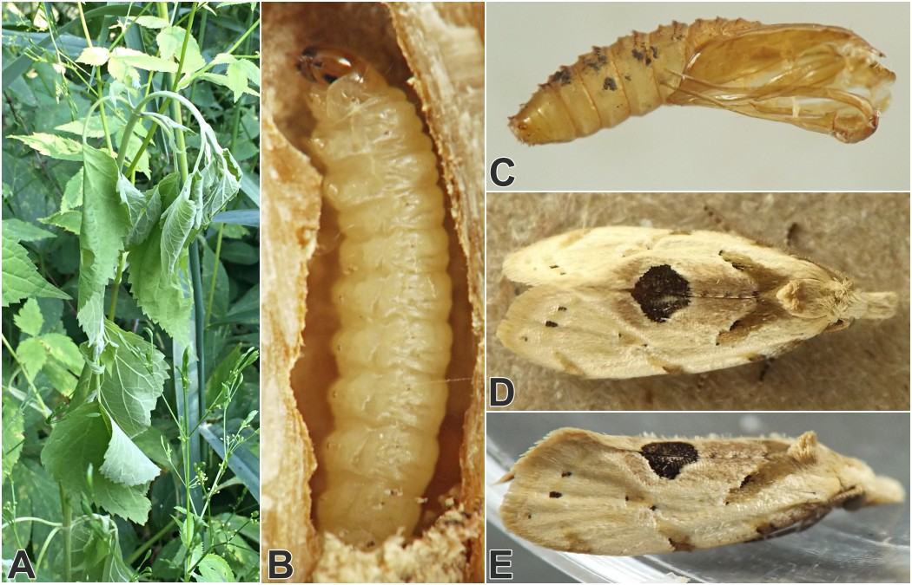

Stem borer (Lepidoptera: Tortricidae) in Ageratina
| Record no.: | 0025 |
|---|---|
| Feeding guild: | Stem borer |
| Taxonomy: | Lepidoptera: Tortricidae: Cochylini: cf. Aethes angustana sp. grp. |
| Stages observed: | trace, larva, adult |
| Distribution observed: | IA |
| Hosts in Ageratina: | A. altissima (white snakeroot) |
A wilted stem of the host I located in early July contained a larva in its tunnel in the base of the stem and crown, with the larva's activities evidently having led to the plant wilting. An agromyzid larva (record 0030) was tunneling in the pith of the same stem, only a few millimeters above the tunnel system of the caterpillar. In its tunnel, the tortricid larva spun a loose, whitish, rather "messy" cocoon that incorporated some of the larva's frass, and the adult moth emerged in August. An image taken by Alexander (2012) in mid-August in New Jersey, USA and posted to BugGuide.net shows a moth that appears externally similar to this one perched on a white snakeroot leaf; the image is filed under "Aethes angustana species group." Comments posted with the image explain that Alexander had witnessed a similar-looking moth perched on white snakeroot plants at this location in the years before the photo was taken, leading her to wonder if white snakeroot might be the host plant. My rearing record in the current study would seem to support this hypothesis, although the adult has not yet been examined by a specialist in order to confirm its identity.
In addition to the July larva that was reared to adulthood, I found several larvae (not reared to adulthood) overwintering in the bases of white snakeroot stems. Details of the head capsule suggested these larvae could possibly belong to the same species as the individual reared to adulthood, but unfortunately this could not be confirmed. If true, it suggests that the moth might have two generations per year, with the first generation overwintering as larvae in dead stems and giving rise to adults in spring, and the second generation feeding as larvae in midsummer and producing adults by sometime in August.
See also: Ageratina stem insects compilation

 Prev
Prev
{kind=link}
- Alexander, Y. 2012. Aethes angustana. Contributor post at BugGuide.net. Retrieved February 22, 2024 from https://bugguide.net/node/view/690471/.[return to in-text citation]
Page created: February 9, 2026. Last update: March 30, 2026